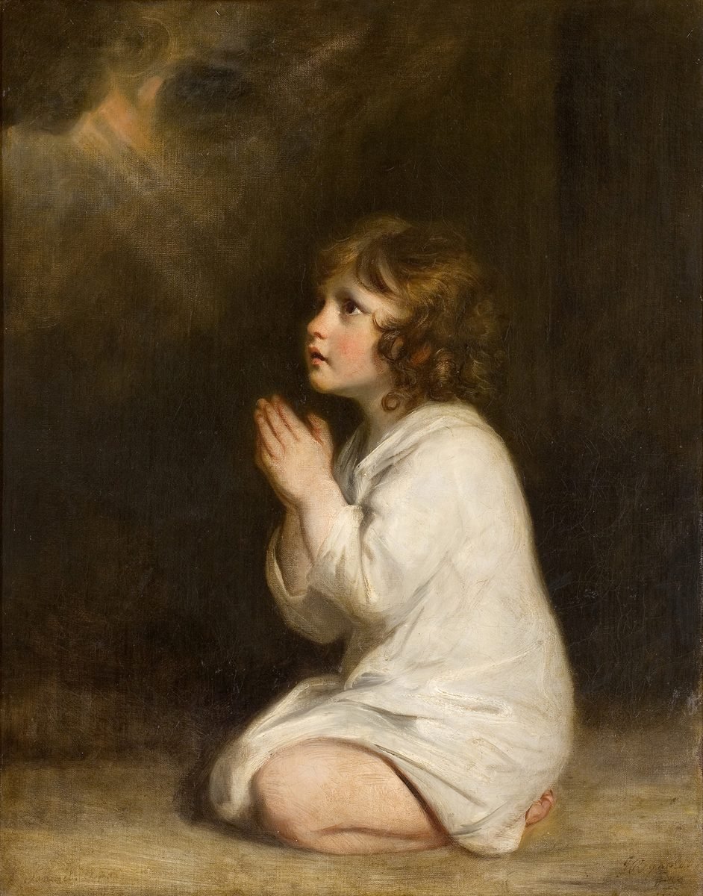

1 Samuel 3 — The Mister Translation

Joshua Reynolds painted the boy Samuel several times; this version shows him kneeling in the dark, turned toward a light in the corner, at the moment the chapter builds to: “Speak, for your servant is listening” (v. 10). The prayer pose is the painter’s; the chapter has Samuel lying down and running to Eli.

Translator's Notes — verse by verse
“Rare in those days.” “The word of Jehovah was rare in those days; there was no vision breaking through.” The adjective yaqar means “precious”, and precious because scarce. The verb for the vision is niphrats, from parats, “break out”, the root of Perez’s name, “how you have broken out” (Genesis 38:29, now on these pages); this form stands in one verse of the Hebrew Bible. The ASV has “the word of Jehovah was precious in those days; there was no frequent vision”; the NWT 1984 “there was no vision being spread abroad”; the KJV “no open vision”.
Dim eyes. Eli lies in his place, “his eyes had begun to grow dim; he could not see”. The verb is kahah, used of Isaac when he was old, “his eyes were too dim to see” (Genesis 27:1), and denied of Moses, “his eye had not grown dim” (Deuteronomy 34:7), both now on these pages. It comes back in verse 13.
“The lamp of God had not yet gone out.” The lamp in the sanctuary was to burn “from evening to morning before Jehovah” (Exodus 27:21; Leviticus 24:3, both now on these pages), so the call comes in the last hours of the night. Samuel is “lying down in the temple of Jehovah, where the ark of God was”, the heikhal at whose doorpost Eli sat in 1 Samuel 1:9 (now on these pages). The ASV has “the lamp of God was not yet gone out”; the KJV reorders the clauses, “ere the lamp of God went out in the temple”. Josephus says Samuel was then twelve years old (Antiquities 5.348, numbered 5.10.4 in Whiston).
“Here I am.” Samuel’s answer, hinneni, is the answer of Abraham, “Abraham! Abraham!” — “Here I am” (Genesis 22:11), of Jacob, “Jacob, Jacob” (Genesis 46:2), and of Moses at the bush, “Moses, Moses!” (Exodus 3:4), all now on these pages. Samuel gives it three times to the wrong person and runs to the old priest each time. Only at the fourth call is the name doubled, “Samuel! Samuel!” (v. 10); the doubled name stands in one verse of the Hebrew Bible. The Greek doubles it already at verses 4 and 6. The NWT 1984 has “Samuel, Samuel!”; the ASV “Samuel, Samuel”.
“Did not yet know Jehovah.” “Now Samuel did not yet know Jehovah, and the word of Jehovah had not yet been revealed to him.” The words are those said of Eli’s sons, “they did not know Jehovah” (1 Samuel 2:12, now on these pages); for Samuel the narrator adds “yet”. It is the priest who cannot see who “understood that Jehovah was calling the boy” (v. 8).
“Jehovah came and stood there.” At the fourth call “Jehovah came and stood there”, the verb of Sinai, “Jehovah descended in the cloud, and stood with him there” (Exodus 34:5, now on these pages). Samuel answers with the words Eli gave him, but without the Name: Eli said “Speak, Jehovah, for your servant is listening”, and Samuel says “Speak, for your servant is listening”. The NIV has “Speak, for your servant is listening”; the Douay puts the title back, “Speak, Lord, for thy servant heareth”.
“Both ears will tingle.” “Look — I am doing a thing in Israel at which both ears of everyone who hears it will tingle.” The verb for the ears’ tingling stands in three verses of the Hebrew Bible: here, and in two words against Jerusalem, 2 Kings 21:12 and Jeremiah 19:3, “the ears of everyone who hears of it will tingle” (now on these pages). The ASV has “both the ears of every one that heareth it shall tingle”.
“Cursing themselves” or “cursing God”. The sin is that “his sons were bringing a curse on themselves”, meqallelim lahem, from qalal. The Greek reads “speaking evil of God”, kakologountes theon, which in Hebrew would be Elohim where the Hebrew has lahem, “themselves”. Rabbinic tradition counts this verse among the tiqqune soferim, the “corrections of the scribes”, places where a phrase too harsh against God was said to have been softened; and the law forbids exactly that sin, “You shall not revile God” (Exodus 22:28, now on these pages). This translation follows the Hebrew. The shelf splits: the ASV has “his sons did bring a curse upon themselves”; the KJV “his sons made themselves vile”; the NWT 1984 follows the Greek, “his sons are calling down evil upon God”, and so does the NIV, “his sons blasphemed God”.
“He did not restrain them.” The charge against Eli is “he did not restrain them”, lo kihah bam, and the verb is the same kahah as his dimming eyes in verse 2: the man whose eyes grew dim did not dim his sons. The ASV has “he restrained them not”; the NWT 1984 “he has not rebuked them”.
No atonement. “The iniquity of Eli’s house shall not be atoned for by sacrifice or by offering, forever.” The house that fattened itself on “every offering of Israel” (1 Samuel 2:29, now on these pages) will find no sacrifice that covers it. The verb is kaphar, the verb of atonement; this wording, “the iniquity … shall be atoned for”, stands in one verse of the Hebrew Bible.
“Samuel, my son.” Samuel opens the doors in the morning, afraid to tell “the vision”. Eli calls him, “Samuel, my son”, and he answers “Here I am”, as Esau answered his old, dim-eyed father, “My son” — “Here I am” (Genesis 27:1, now on these pages). Josephus says Eli made Samuel speak by binding him with oaths, and gives the message as the death of Eli’s sons on one day and the passing of the priesthood to the house of Eleazar (Antiquities 5.350–351, numbered 5.10.4 in Whiston).
“May God do so to you, and more also.” Eli puts Samuel under the oath that Ruth swore on herself, “May Jehovah do so to me, and more also” (Ruth 1:17, now on these pages): this wording, “may God do so to you”, stands in one verse of the Hebrew Bible. He asks for “all the word”, and Samuel tells him “all the words, and hid nothing from him”. The ASV has “Samuel told him every whit, and hid nothing from him”.
“He is Jehovah.” Eli’s answer is short: “He is Jehovah; let him do what is good in his eyes.” He does not plead or argue. The NWT 1984 has “It is Jehovah. What is good in his eyes let him do”; the ASV “It is Jehovah: let him do what seemeth him good”; the NIV “He is the Lord; let him do what is good in his eyes”.
“None of his words fall to the ground.” “Jehovah was with him and let none of his words fall to the ground.” The verb is naphal, “fall”, the verb of Joshua’s summary, “Not one word failed of all the good thing that Jehovah had spoken” (Joshua 21:45, now on these pages), and the law’s test of a prophet is whether his word comes about (Deuteronomy 18:22, now on these pages). The ASV has “did let none of his words fall to the ground”; the NIV “he let none of Samuel’s words fall to the ground”, naming whose words they are.
“From Dan to Beersheba.” All Israel, north to south, knew it. “From Dan to Beersheba” stands in seven verses of the Hebrew Bible, and this is the second; the first is the assembly against Gibeah (Judges 20:1, now on these pages).
“Faithful as a prophet.” They knew “that Samuel was faithful as a prophet of Jehovah”: the word is ne’eman, from aman, the adjective of the man of God’s promise in the last chapter, “a faithful priest … a faithful house” (1 Samuel 2:35, now on these pages). Here it means proved true, someone whose word can be leaned on. The ASV has “Samuel was established to be a prophet of Jehovah”; the NIV “Samuel was attested as a prophet”; the Douay “Samuel was a faithful prophet of the Lord”. Peter counts the prophets “from Samuel and those who came after him” (Acts 3:24, now on these pages).
Seen again at Shiloh. “And Jehovah appeared again in Shiloh, for Jehovah revealed himself to Samuel in Shiloh by the word of Jehovah.” The chapter opened with the word of Jehovah rare and closes with it revealed; Shiloh, where the lamp was nearly out, has a prophet. The Greek lengthens the verse: Samuel “was trusted to be a prophet of the Lord to all Israel from end to end of the land; and Eli was very old, and his sons kept going on, and their way was evil before the Lord”.
Patterns worth carrying forward
Where this translation keeps the words exact and distinct: “Here I am” for hinneni, as with Abraham, Jacob and Moses; “did not yet know Jehovah”, keeping the words used of Eli’s sons; “grow dim” for kahah, as with Isaac and Moses, and “restrain” for the same verb in verse 13, with the pun explained; “bringing a curse on themselves” for the Hebrew’s meqallelim lahem, with the Greek’s “God” in the note; “stood” for hityatsev, as at Sinai; “may God do so to you, and more also”, the oath of Ruth 1:17; “fall” for naphal; and “faithful” for ne’eman, as in 1 Samuel 2:35.
Echoes paid. The word against Eli’s house from the man of God (2:27–36) is spoken again to the boy; “they did not know Jehovah” (2:12) becomes “did not yet know Jehovah”; the “faithful” of 2:35 is fulfilled first in a prophet; and “from Dan to Beersheba” follows Judges 20:1.
Echoes planted. The “thing” that makes the ears tingle — the ark taken and Eli’s sons killed on one day — comes in 1 Samuel 4 (now on these pages); the same tingling ears return in 2 Kings 21:12.
Next in this book: 1 Samuel 4 — Israel loses to the Philistines at Ebenezer and brings the ark from Shiloh into the camp; the ark is taken, Hophni and Phinehas die on one day, Eli falls from his seat, and a child is named Ichabod, “the glory has gone into exile from Israel”.